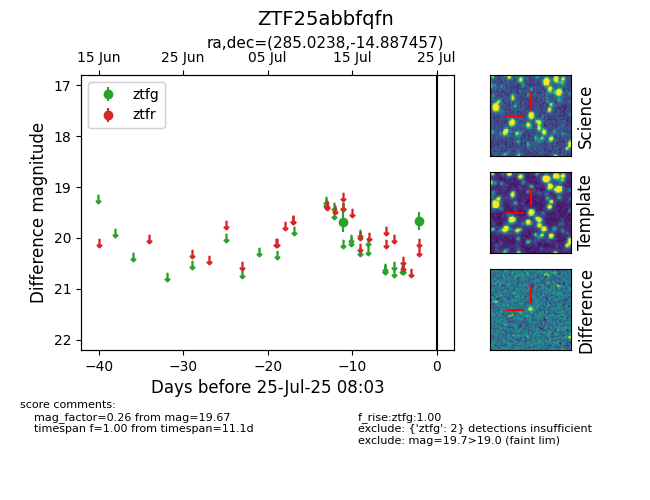

Target ZTF25abbfqfn at 2025-07-25 08:03, see:
FINK: fink-portal.org/ZTF25abbfqfn
Lasair: lasair-ztf.lsst.ac.uk/objects/ZTF25abbfqfn
ALeRCE: alerce.online/object/ZTF25abbfqfn
alt names
ZTF25abbfqfn (ztf,fink)
coordinates:
equatorial (ra, dec) = (285.0238,-14.88746)
galactic (l, b) = (20.5499,-8.60572)
photometry
last ztfg=19.67
2 ztfg detections
